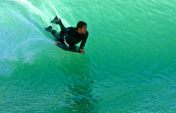

There a lots of exciting things to do around
If you are staying on the main holiday park you will benefit from the excellent facilities on offer. The Swimming Pool and leisure centre is modern and spacious, and there are various play activities around the site as well. The park is well equipped for it's guests and you will find a non-stop programme of entertainment throughout your stay.
Sports for all
 If you are not staying with the holiday park fear not! The whole point of visiting Challaborough is the environment and area you are in. The beach that is on your doorstep is a truly exceptional blue flag beach, one of the best in the area. It is far less busy than any of the other local beaches, despite having better access and ammenities. There are two food outlets, a bar, public toilets, play parks, shop and ice cream hatches within bare foot walking distance.
Farms for all
In an Area of Outstanding Natural Beauty, it is the perfect place for lovers of the outdoors with coastal paths leading to beaches and coves along the shores. The beaches are family friendly and the unique sea tractor crossing to Burgh Island is a must while you're here.
Whether you're planning a short break or a longer holiday at Challaborough Bay it has to be said that the park is in one of the best locations for coastal walks in south Devon the surrounding are offers ample attractions and activities for the whole family.